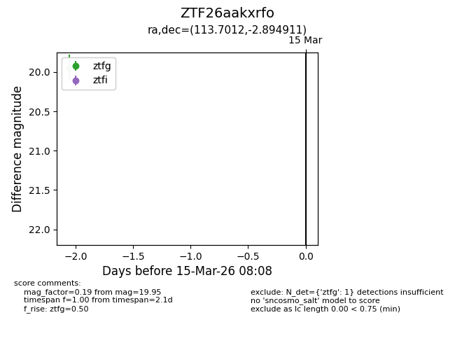
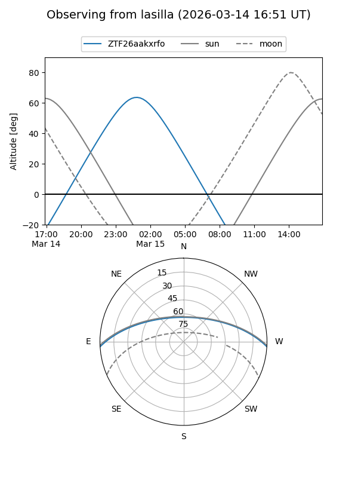
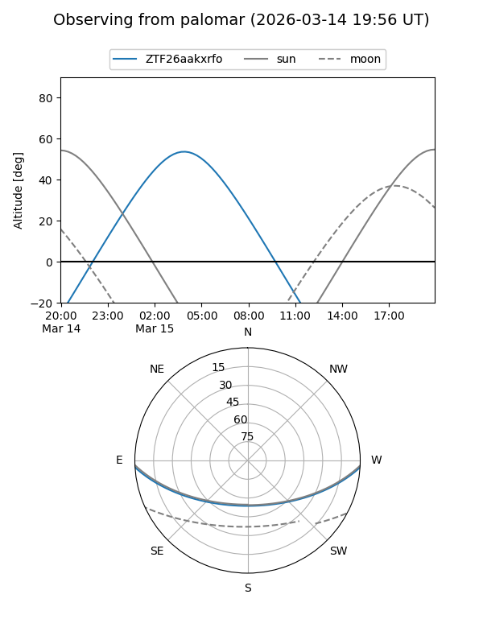

ZTF26aakxrfo
Target ZTF26aakxrfo at 2026-03-15 08:10
Aliases and brokers:
FINK: link
Lasair: link
ALeRCE: link
alt names
ZTF26aakxrfo (ztf,fink_ztf)
Coordinates:
equatorial (ra, dec) = 113.7012,-2.89491
equatorial (HMS+DMS) = 07:34:48.29,-02:53:41.68
galactic (l, b) = (220.5163,+8.28869)
Flags:
Photometry:
last ztfg=19.95
1 ztfg detections
Lightcurve

Visibility


Additional plots